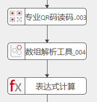

本工具用于对图像中的QR码进行识读。
| 参数名称 | 参数描述 |
|---|---|
| 是否启用ROI | 启用后将限定读码的识别范围，配合参数链—“二维线性变换”一起使用；不启用则默认为全图识别； |
| 读码区域 | 读码识别区域，为仿射矩形； |
| 待读取QR码个数 | 选择要读取的QR码个数，例：当图像中有10个QR码时，设置需要读取的个数为2，则最终会只读取2个QR码，且返回读码成功。若图像中只有1个QR码，设置需要读取的个数为2，则最终只会读取1个QR码，返回读码失败； |
| 是否限定读码个数 | 当功能开启时，读到的QR码个数与设定的待读取QR码个数不相等时运行失败；功能关闭时，得到的QR码个数大于零小于等于设置的待读取QR码个数，工具运行成功； |
| QR码类型 | QR码、微QR码 |
| 条码极性 | 黑色码-DarkOnLight、白色码-LightOnDark； |
| 开启质量评价 | 是否开启质量评价，默认不开启 |
| 质量评价标准 | 评价标准支持ISOIEC15415和AIMDPM |
| 条码等级下限 | 评价标准等级下限，当条码等级低于下限工具运行不成功。 |
| 是否启动TimeOut | 为了防止工具执行时间过长，增加超时处理，选择是时，如果执行时长超出指定时长，工具执行失败并退出； |
| TimeOut | 启动TimeOut时可用，单位为ms，取值范围【1，1000000】。在执行计算时可能无法立即中断计算，所以可能存在2~3ms的误差，在设置值时，需要比预期执行时间大，否则可能影响识别率； |
| 启用训练 | 选择启用训练，可以加快工具执行效率；选择启用训练后，会将当前场景的第一个解码成功的QR码码区信息作为训练结果，用于后续图像的读码；训练结果会在选择“否”和执行失败时进行清空；如果当前产品码区尺寸相差较大，不建议启用训练，因为可能会影响识别率； |
| 输入图像 | 待读码的图像； |
| 二维线性变换 | 读码区域接收二维线性变换以确保读码区域与QR码的相对固定； |
| 参数名称 | 参数描述 |
|---|---|
| 输入图像 | 输入图像的宽度、高度、像素大小； |
| 评价结果 | 根据质量评级标准，输出ISOIEC15415或AIMDPM评价结果 |
| 结果数目 | 工具实际读码数目； |
| 所有读码结果 | 显示所有读码结果，包括条码区域、解码字符串及版本、条码极性、模块尺寸、是否镜像、降采样分辨率等； |
| 执行结果 | 工具执行结果； |
| 执行时间 | 工具执行时间； |
| 输出图像 | 完成读码的图像； |
| 条码区域 | 条码所在的区域； |
| 结果数目 | 工具实际读码数目，与监视窗口中的“结果数目”是同一个参数； |
| 所有读码结果 | 包括读码结果，包括条码区域、解码字符串及版本、条码极性、模块尺寸、是否镜像、降采样分辨率等。与监视窗口中的“所有读码结果”是同一参数； |
相对于QR码读码工具的升级点
获取读码结果需要一个数组解析工具（数据类型选择QRSingleReaderResultEx,区别于QR码读码工具的QRSingleReaderResult），如果有多个读码结果，可以用循环来个挨个获取，在数组解析工具的参数链中设置输出参数项，通过变量表达式赋值可以获取最终的解码字符串。

参见“\Samples\专业QR码读码工具.gvp”